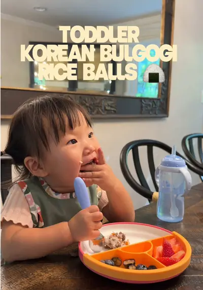

Toddler Korean Bulgogi Rice Balls

Ingredients
- 1 lb ground beef
- ½ medium carrot, finely chopped
- ½ medium onion, finely diced
- 2 cloves garlic, minced
- Finely diced mushrooms
- 1 tbsp low-sodium soy sauce
- 1 tbsp sesame oil
- 2 tbsp unsweetened applesauce
- Sprinkle of toasted sesame seeds
- Cooked rice
- Olive oil for cooking You can also add in any finely chopped veggies you have on hand!
Steps
- Sauté the garlic and onion in a little olive oil until fragrant.
- Add the carrots and cook until they begin to soften.
- Add the ground beef and cook through, breaking it into small pieces. I used a paper towel to carefully dab away any excess fat.
- Add the finely diced mushrooms or any other finely chopped veggies you’d like.
- Stir in the low-sodium soy sauce, sesame oil and applesauce.
- Continue cooking until everything is fully cooked and combined, then sprinkle with toasted sesame seeds.
- Mix the bulgogi beef with cooked rice.
- Once cool enough to handle, use your hands to form into toddler-sized rice balls. That’s it!
Recipe text as written by @busymamaeasybites on TikTok. Open original